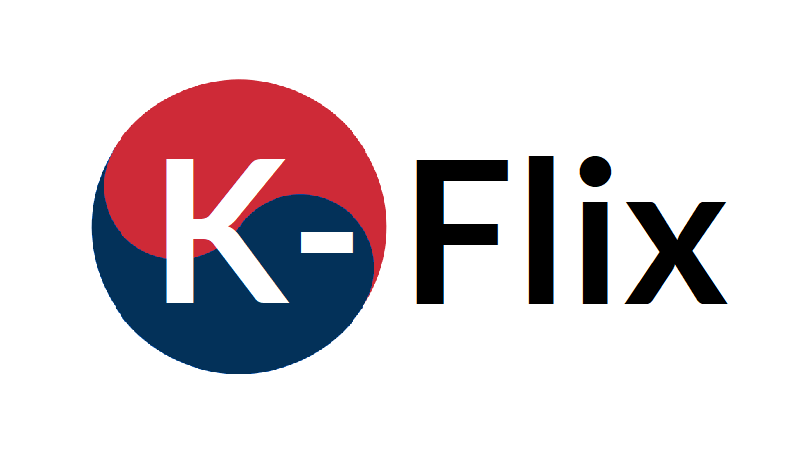

<div class="nav-bar">
    <mat-toolbar class="navbar">
        
        <div>
            <button mat-button (click)="toUser()">
                <mat-icon>person</mat-icon>
                Profile
            </button>
            <button mat-button (click)="toMovies()">
                <mat-icon>movie</mat-icon>
                Movies
            </button>
            <button mat-raised-button class="logout-button" (click)="userLogout()">
                <mat-icon>exit_to_app</mat-icon> 
                Logout
            </button>
        </div>
    </mat-toolbar>
</div>